UE4 Integration 2.00
- Welcome
- User Guide
- Getting Started
- Programming Support
- Listener
- Working with Banks
- Sequencer Integration
- Occlusion
- Reverb Zones
- Callbacks
- Programmer Sounds
- Using Plugins
- Deployment
- Known Issues
2. User Guide
2.1 Getting Started
2.1.1 Requirements
Before beginning, make sure you've already:
- Gotten a build of UE4
- Downloaded and installed FMOD Studio
- Downloaded the FMOD UE4 integration
Normally you will just need one copy of the UE4 integration. If you develop for multiple platforms at once, you can copy multiple integrations over the top of each other.
2.1.2 Installing the integration
The first step is to install the FMOD Studio UE4 integration. The integration consists of a single FMODStudio folder which can be placed in either the Engine/Plugins directory or your UE4 game's Plugin directory. The next steps show how to install it into your Engine directory, so it will be available for all projects using UE4.
Windows:
Browse to your UE4 Engine folder and unzip FMODStudio into the plugins directory.
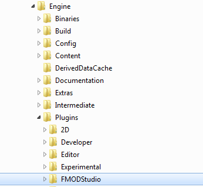
Mac:
Use Finder to browse to your /Users/Shared/UnrealEngine/4.X/Engine directory and drop FMODStudio into the plugins directory.
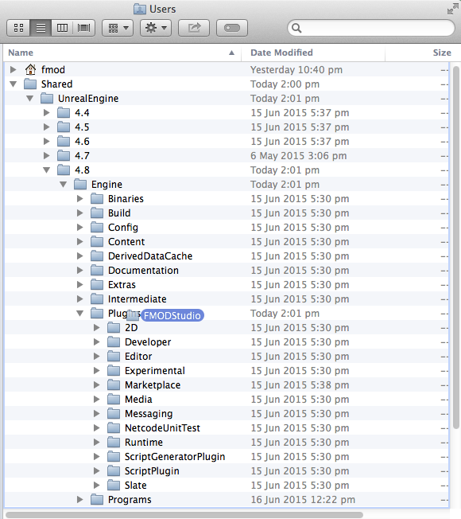
If you have trouble getting the plugin working on a certain platform, then try putting FMODStudio in your game's Plugins directory instead of the engine.
2.1.3 Making sure the plugin is installed
Next time you open UE4, you should see a shortcut to the manual is available under the help menu. That means the plugin is in the right place and has been enabled.
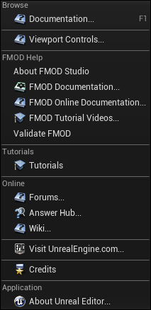
If you see the FMOD Help in the manual, then the plugin installed correctly. If you don't see FMOD help, it isn't installed.
2.1.4 Setting up your project
To begin adding sounds to your UE4 project, you'll first want to create a project within FMOD Studio. For the purposes of this tutorial, we are going to create a copy of the Examples project that ships with Studio.
To do this, open FMOD Studio, select 'File > Open...', select the Examples.fspro file in the file browser dialog, then select 'File > Save As...'. From here, select a destination to save the file to. Studio will create a new folder containing all of the project files necessary. The directory can be under your UE4 game's directory, or it could be anywhere on disk.
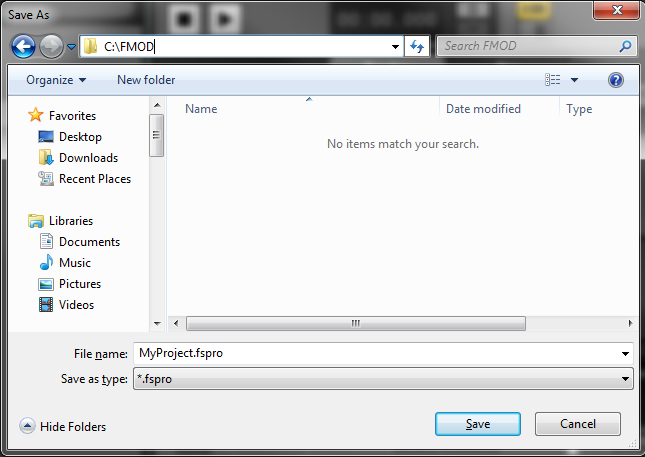
Now that you have a project to work with, we can set up to export bank files into your game's content directory. To do this, select 'Edit > Preferences...' ('FMOD Studio > Preferences...' on Mac) and select the Build tab. Set your Built banks output directory to a directory called FMOD under your game's Content path.
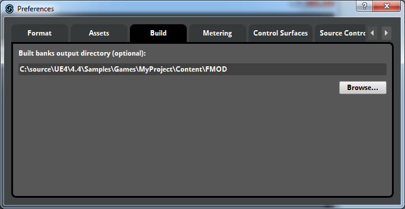
Now select 'File > Build'. This will build bank files for events that have been assigned to banks. You should do this whenever project data has been modified.
Now, open UE4 and look at the content browser. The plug-in defaults to looking in Content/FMOD directory for banks, so if you have exported banks there, assets should appear in the content window automatically. These represent items in your Studio project which update automatically when banks are built.
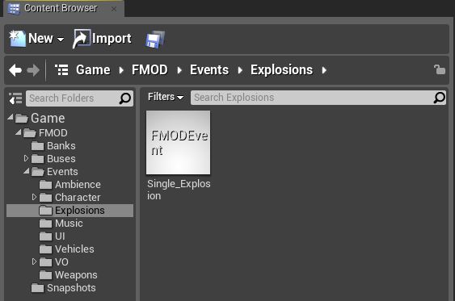
For more information about banks, see the Banks page.
Setting up the project automatically
You can run the FMOD Validate option in the UE4 Help menu. It finds and fixes common issues, and can automatically set up your FMOD Studio project for you!
It will check the following:
- You are running the right version of FMOD Studio
- Your FMOD Studio bank export path is correct
- Banks have been exported
- Studio events have been added to the banks
- Any plugins have been added to the plugin list
- FMOD has been added to the packaging settings for deployment
If you have any trouble setting up your project, just run this!
2.1.5 Making sounds
The FMOD Studio UE4 integration provides multiple ways in which Studio events can be played.
Ambient Sounds
The simplest way to play a looping ambience, is to drag and drop an event from the Content Browser into a scene Viewport.
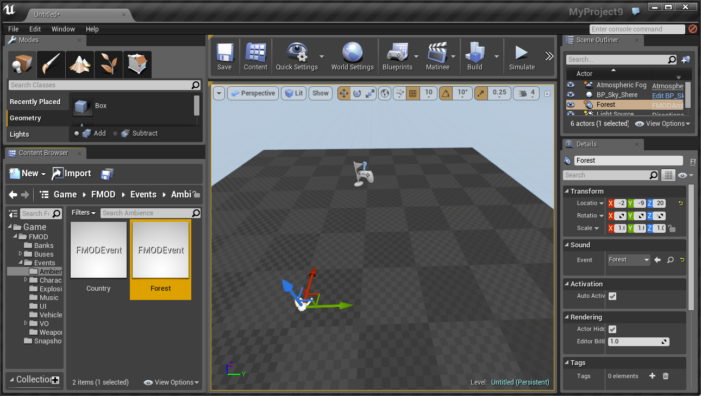
For example, try dragging the Game/FMOD/Events/Ambience/Forest event into a level. This will create an FMODAmbientSound. Hit Play to begin playing in editor, and you should immediately hear the Forest ambience.
Make sure you drag an event into the main viewport. Dragging a bank into main viewport won't do anything.
Playing Sounds From Blueprint
Another easy way to trigger a sound is via Blueprint. You can use the Play Event at Location function to quickly trigger any given event.
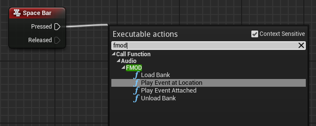
In the example shown below, the Single_Explosion event is triggered at the location of the camera, every time the spacebar is pressed.
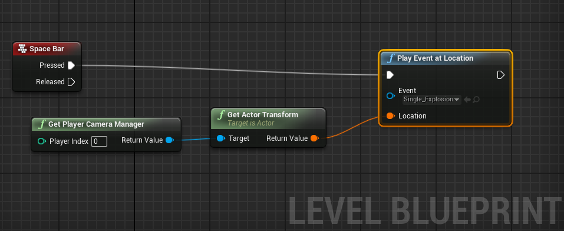
Other avenues
Keep in mind that more advanced control is also available from Blueprints. There are graph functions for playing and stopping events, setting parameters, and loading or unloading banks. You can also add FMODAudio components to Blueprints, allowing you attach audio directly to an object.
2.1.6 Compiling the plugin (Optional)
If you want to recompile the plugin, you can drop the plugin into a code project under your game's Plugins/FMODStudio directory, then re-generate the project. This might be useful if you want to use the plugin with a different version of the engine, such as a new pre-release of UE4. You can also do this if you want to get the plugin from github.
To recompile the plugin after downloading it from FMOD, do the following:
- Delete the
FMODStudio/Intermediatedirectory. - Delete the
FMODStudio/Binaries/Platform/UE4*.*files. Leave the fmod libraries in the binaries directory! - Create a new code project using UE4.
- Copy the plugin into
YourGame/Plugins/FMODStudio. - Regenerate the game's solution or xcode project.
- Build the game for "Development Editor".
- Build the game for whatever other configurations you need.
To compile the plugin after downloading the source from github, do the following
- Add FMOD dynamic libraries into the
FMODStudio/Binaries/Platform/directory. The libs can be obtained in the Programmers API download or from the UE4 integration download. - Create a new code project using UE4.
- Copy the plugin into
YourGame/Plugins/FMODStudio. - Regenerate the game's solution or xcode project.
- Build the game for "Development Editor".
- Build the game for whatever other configurations you need.
When rebuilding the plugin inside a code project, make sure you haven't also left it in the engine directory as well!
2.2 Programming Support
2.2.1 Programming with the FMOD Studio plugin
Programmers can interface with FMOD Studio directly. To reference FMOD Studio, the programmer will need to add the following to their .Build.cs file:
- Add FMODStudio to PrivateDependencyModuleNames
To add some FMOD Events to a class, do the following:
- Include FMODEvent.h at the top of your own class
- Add a UFMODEvent * and mark with the UPROPERTY macro like any other field
To play the event at a location, do the following:
- Include FMODBlueprintStatics.h in the file you want to trigger the sound
- Call
UFMODBlueprintStatics::PlayEventAtLocationwith the following arguments:- Set WorldContextObject to any UObject in the world, such as the owning actor object
- Set Event to the UFMODEvent stored in the class or passed into your function
- Set Transform to the place in the world you want to play the sound
- Set bAutoPlay to true so that it starts the sound automatically
You can also call UFMODBlueprintStatics::PlayEventAttached to create a new audio component attached to an actor, which will update the location automatically as the actor moves around the world.
2.2.2 Programming with the FMOD Studio C++ API
Programmers can interface with FMOD Studio directly by including fmod_studio.hpp.
The Studio system can be obtained by GetStudioSystem. The function takes an enum because there may be a separate Studio system for auditioning in-editor and the proper system for play-in-editor. Normally, you will want to obtain the system with EFMODSystemContext.Runtime since that is the real system used in game.
if (IFMODStudioModule::IsAvailable())
{
FMOD::Studio::System* StudioSystem = IFMODStudioModule::Get().GetStudioSystem(EFMODSystemContext::Runtime);
if (StudioSystem)
{
// Use it here
}
}
You can use a mixture of FMOD Studio wrapper and FMOD Studio API functions. For example:
// Call wrapper helper function to create and start an event instance
FFMODEventInstance InstanceWrapper = UFMODBlueprintStatics::PlayEventAtLocation(ThisActor, MyEvent, FTransform(MyLocation), true);
FMOD::Studio::EventInstance* Instance = InstanceWrapper.Instance;
// Call into FMOD API directly
Instance->setVolume(0.5f);
// The instance handle will be cleaned up automatically when the sound finishes
2.2.3 Further Programming Documentation
For further documentation, see the Programmer Topics section or the API Reference.
2.3 Listener
FMOD can support up to 8 listeners in game. The FMOD listeners will follow the UE4 listeners which by default is attached to the camera, but we can move them by moving the UE4 listeners.
This is particularly useful for Third-Person and Top-Down style games.
2.3.1 Example
Using SetAudioListenerOverride allows you either attach the listener to a component or set the transform and rotation manually.
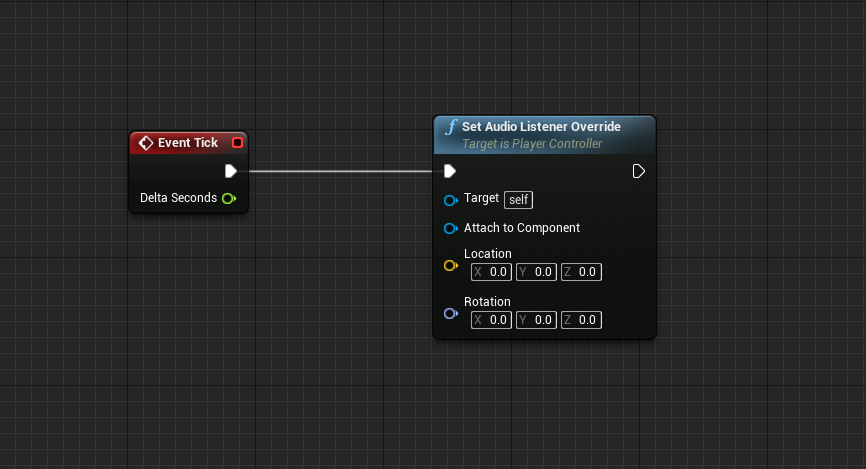
2.4 Working with Banks
2.4.1 About Bank Files
Content created in the FMOD Studio tool is exported into bank files. These bank files can then be loaded within Unreal using the FMOD Studio runtime integration. Banks can contain multiple events, which will implicity pull in any audio assets they depend on.

Loading a bank will load all metadata, which contains information about all the events, parameters, and other data needed for all events assigned to that bank.
2.4.2 Studio Bank Output Directory
It is highly recommended that banks are exported to the Content directory of your project (see the Deployment page for more information). This can set via the Built banks output directory setting in the FMOD Studio, which can be found in 'Edit > Preferences...' on Windows (or 'FMOD Studio > Preferences...' on Mac), under the Build tab.
When using the UE4 editor, as long as you match the FMOD Studio Built banks output directory to the Bank Output Directory specified in the Unreal project settings ('Edit > Project Settings > FMOD Studio'), the integration will find and load all bank content automatically.
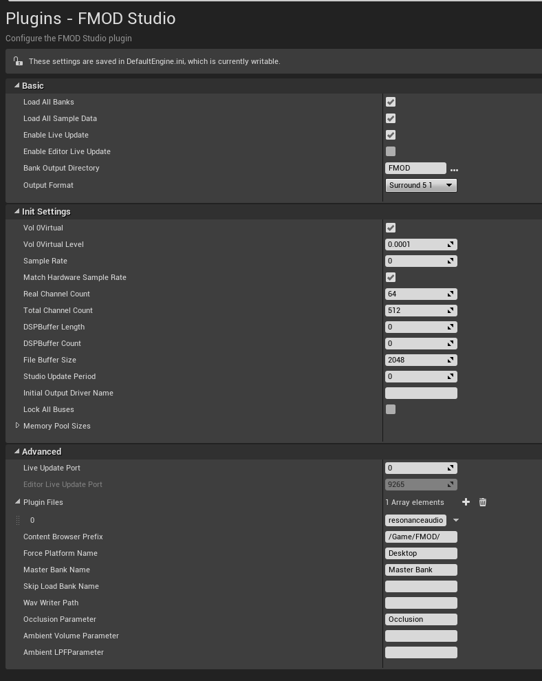
2.4.3 Assigning Events to Banks
Before a new FMOD Studio event can be used in Unreal, it must first be assigned and built to a bank which can be loaded by Unreal. This can be done within FMOD Studio via the context menu of an event, or by dragging and dropping an event onto a bank.
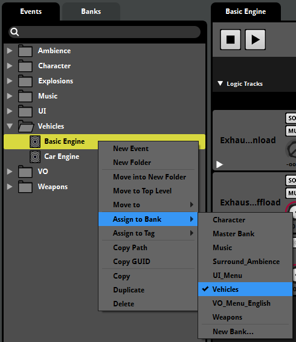
Events are typically assigned to the same bank when they should be loaded and unloaded at the same time. For example, you might put all the events for the Goblin enemy within the Goblin bank.
Once you have assigned your events to a bank, you should rebuild your banks. This is done via the 'File > Build...' menu item.
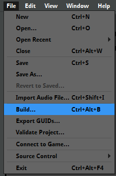
2.4.4 Loading Banks within Unreal
In Editor
Within the Unreal editor, banks are loaded automatically as soon they are built. When correctly configured, any data within banks (e.g. events, mixer strips) should appear within the Content Browser under Game/FMOD by default.
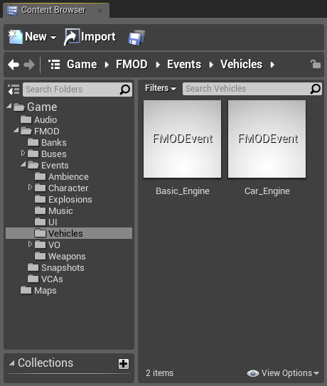
In Game
The FMOD Studio integration will load all banks by default. If you would like to manually control bank loading, this behavior can be disabled via the Load All Banks checkbox withing the FMOD Studio settings dialog ('Edit > Project Settings > FMOD Studio').
If using split banks, make sure to load the assets bank first and using Load Sample Data on the metadata bank.
Banks can then manually be loaded and unloaded using the Load Bank and Unload Bank Blueprint functions.
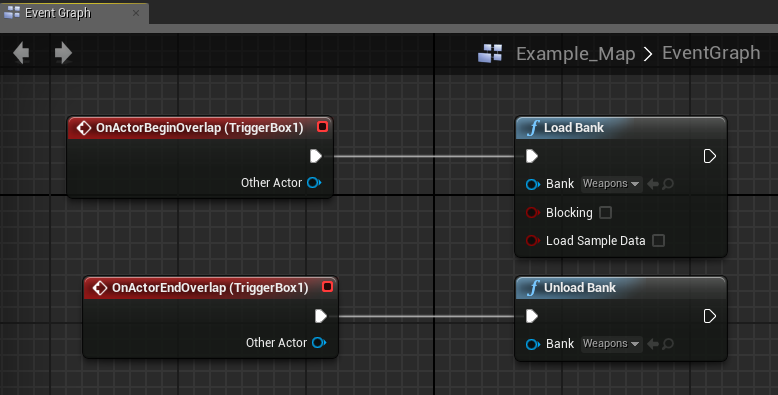
The Master Bank does not need to be loaded manually. It is automatically loaded at startup.
2.5 Sequencer Integration
FMOD is integrated into Unreal Engine 4's Sequencer.
2.5.1 Adding FMOD Events to a Level Sequence
Events can be added in one of two ways:
-
Ambient sounds already placed in the level may be possessed by the level sequence. Add ambient sound actors to the sequence by clicking the button in the Sequencer editor and choosing the ambient sound actor to add. Alternatively the actor can be dragged from the World Outliner into the Sequencer editor.
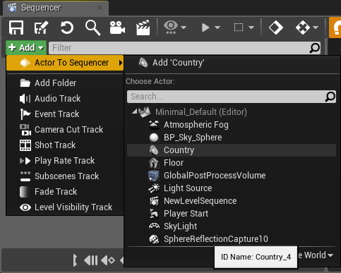
Possessed events will retain any state set by the level sequence when playack is complete. The level sequence's Restore State setting can be enabled to restore the state of possessed events (and any other actors possessed by the level sequence). -
New events may be spawned from Sequencer. Sequencer can spawn FMOD events during playback. To create a spawned event drag an FMOD event from the Content Browser into the Sequencer editor.
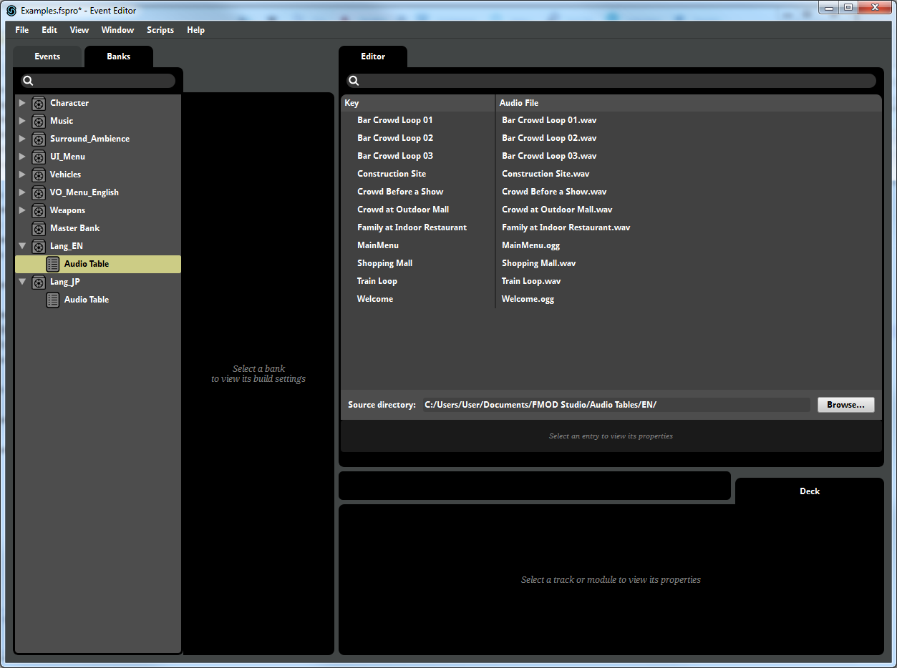
Spawned events will not automatically play when spawned.
2.5.2 Adding Event Sub-Tracks
Once added to a sequence additional sub-tracks are required to do anything interesting. Sub-tracks can be added by clicking the button in the object's track. FMOD adds two new sub-track types for events in addition to the standard Sequencer sub-tracks.
- Event control tracks allow events to be played and stopped.
- Parameter tracks allow event parameters to be animated using Sequencer's keyframe animation tools.
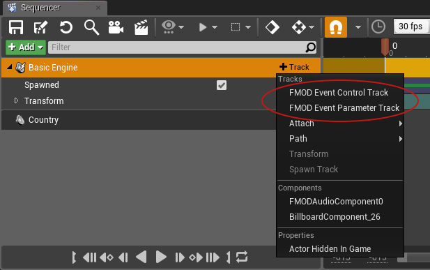
2.5.3 Event Control Sub-Track
Keyframes on the event control sub-track can be used to Play or Stop the event.
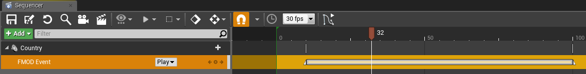
2.5.4 Parameter Track
An FMOD Event Parameter Track allows additional sub-tracks to be added for each parameter in the targeted FMOD event. Additional sub-tracks can be added by clicking the button in the FMOD Event Parameter Track.
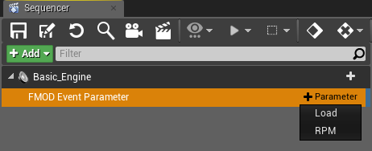
Keyframes may be added to the parameter sub-tracks to control the value of the event parameter during playback of the level sequence. The Unreal Engine 4 curve editor may be used to create rich curves for FMOD event parameters.
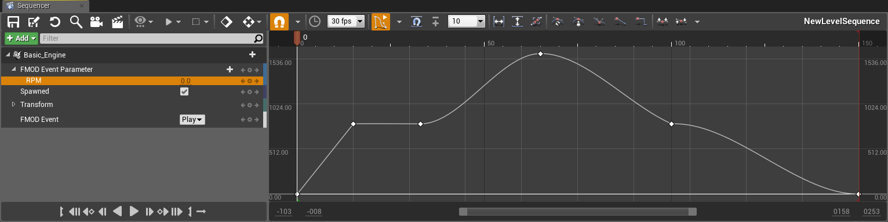
The FMOD UE4 integration is unable to validate the range of parameter values set by Sequencer. The FMOD studio runtime will clamp any parameter value outside the range specified in FMOD Studio.
2.6 Occlusion
The FMOD integration supports the use of ray casts, to drive a specified parameter, for per instance occlusion of sounds.
2.6.1 Occlusion Settings
To enable occlusion ray casts for FMOD in your UE4 project, set the name of the parameter that will be used for Occlusion in Studio.
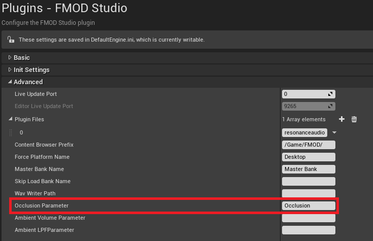
If an Event contains this parameter, the integration will set the parameter value any time the occlusion value changes.
You can disable occlusion, per instance, and adjust the Trace Channel in the Component Details window.
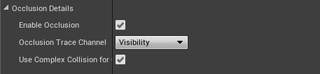
The way occlusion works will depend on how the Event is set up in FMOD Studio.
2.7 Reverb Zones
The FMOD integration supports the use of the standard UE4 audio volumes to trigger Studio's advanced snapshot system.
2.7.1 Snapshot Reverb Effects
The workflow to use reverb zones is to set up snapshots in FMOD Studio. Snapshots can modify global reverb effects, change any bus volume, and modify any DSP value. To help trigger snapshots for reverb effects, the UE4 integration exports all snapshots as reverb effects in the FMOD/Reverbs folder.
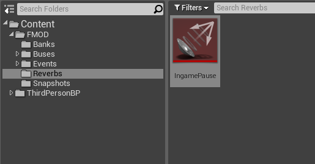
These reverb effects can be dragged into audio volume Reverb Settings panel to be triggered when the audio listener enters the audio zone. It uses the same logic as the inbuilt UE4 audio system to determine which audio volume should be enabled, based on the priority of the volume.
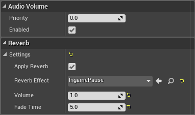
By default, snapshots apply instantly. To have a snapshot fade in, one of two things can be done. The first is by adding a AHDSR modulation to the intensity dial. The second way is to expose the intensity as a parameter, which allows it to be driven from the UE4 integration.
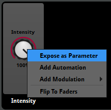
If the snapshot has its intensity exposed as a parameter, then the UE4 integration will ramp in the intensity over time based on the audio volume's Volume and Fade Time settings. If the snapshot does not expose its intensity as a parameter, then these values will not do anything.
2.7.2 Ambient Zone Settings
Another feature of the UE4 audio system is the ability to have an ambient effect applied to selected instances, based on both the listener position and the emitter position. Unlike the global reverb effects, this is something which is applied per instance.
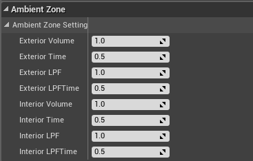
Only some sounds should be affected by the ambient settings. To enable the ambient effect your Events will need two parameters, one for volume and one for LPF.
You will need to add these parameter names to the integration settings.
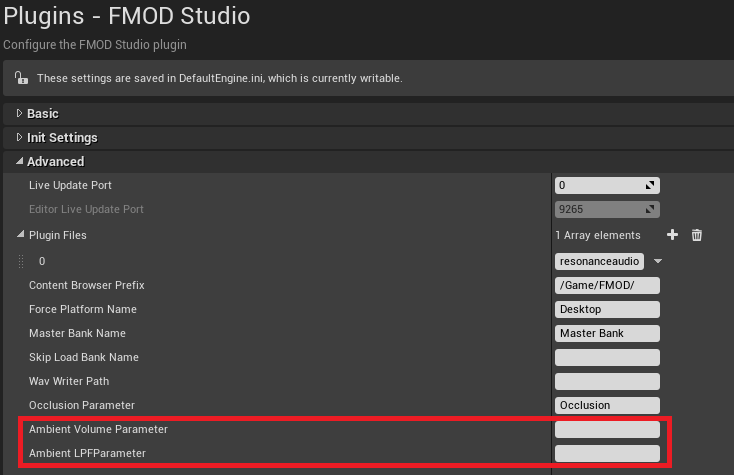
If an Event contains these parameters, the integration will set the parameter value any time the ambient values change.
Only FMOD audio components are affected by ambient zones. The simpler PlayEventAtLocation blueprint function to spawn one-shots does not apply ambient effects.
2.8 Callbacks
You can hook up event callbacks using blueprints. FMOD Audio component callbacks are only triggered if the "Enable callback" option is ticked. This is because each component that triggers callbacks can incur a small CPU overhead, so it has to be turned on explicitly for the components you want to use.
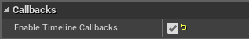
Once enabled, then tempo beat callbacks and timeline callbacks can be added in blueprints. One way is via the Assign On Timeline Beat and Assign On Timeline Marker blueprint actions. For FMOD audio components used in blueprint actors, you can add events from the details window instead.
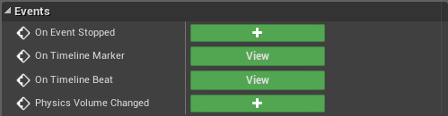
You can trigger various actions to occur on the beat or when a timeline hits a named marker. The event contains the same fields as FMOD_STUDIO_TIMELINE_BEAT_PROPERTIES and FMOD_STUDIO_TIMELINE_MARKER_PROPERTIES.
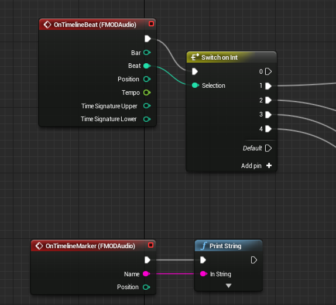
2.9 Programmer Sounds
FMOD Studio events can include programmer sound modules that are controlled at runtime. There are a few different ways of hooking them up.
2.9.1 Programmer Sounds via Audio Tables
With this approach, you don't need to do any programming at all!
Setting up audio tables
Audio tables are directories of sounds that are loaded up into a bank file. You can use audio tables to control localized sounds. To create an audio table, create a new bank, assign an audio table to it, and then select the directory which will contain all the sounds you want in the bank.
The key for each entry it just the file name without any extension. You can create multiple banks each pointing to a different directory for each localized audio you need.
Loading audio tables
By default, the UE4 integration loads all banks at startup. To avoid that, you can use the advanced setting Skip Bank Load Name and provide a prefix, such as _Lang__. In the above project, it means the normal banks will be loaded at startup, but Lang_EN.bank and Lang_JP.bank will be skipped.
Then you can load up one of those banks using blueprint function Load Bank.
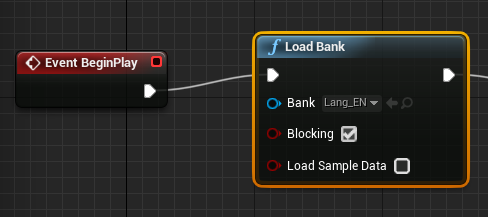
Choosing the audio entry to play
Create an event with a programmer sound module on it. If the module has a name, then if nothing else is assigned then that sound will be used. For example, if the sound designer sets the module name as Welcome, then the audio table entry Welcome will be used by default.
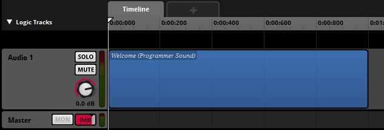
To select at runtime what audio entry to use, set the Programmer Sound Name field in the FMOD audio component.
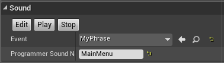
Or you can assign the name via blueprint.
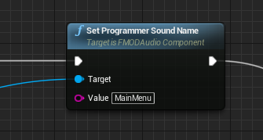
The name has to be one of the audio asset entries of a loaded audio table, or it won't find the sound to play.
Be careful to set the name before you play the audio component. If the name is assigned after the event has started, it may not play the right sound.
2.9.2 Programmer Sounds by Path
With this approach, you can easily play any media file for your event.
You can set up a programmer sound to point directly to a file. To do this, set the FMOD audio component's Programmer Sound Name to the path to the .wav or .ogg file that you want to load. If this path is relative, it will be looked up relative to the content directory.
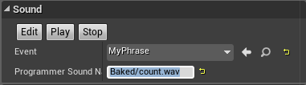
If you do this, you'll need to make sure that directory with the media files is added to Directories to Package in the packaging settings, otherwise it will work in the editor, but not when packaged into the final game.
2.9.3 Programmer Sounds via API
With this approach, you have the most flexibility for programmers.
If you are writing code, you can programmatically set the FMOD Sound to use by calling the FMOD audio component function SetProgrammerSound. Here is an example of setting the sound from code:
void AExampleGameMode::InitAudio(UFMODAudioComponent* AudioComponent)
{
if (AudioComponent)
{
FMOD::Studio::System* System = IFMODStudioModule::Get().GetStudioSystem(EFMODSystemContext::Runtime);
FMOD::System* LowLevelSystem = nullptr;
System->getCoreSystem(&LowLevelSystem);
// Create sound in memory
static const int EXAMPLE_SOUND_LEN = 4096;
float ExampleData[EXAMPLE_SOUND_LEN];
for (int i=0; i<EXAMPLE_SOUND_LEN; ++i)
{
ExampleData[i] = FMath::Sin((float)i);
}
FMOD_CREATESOUNDEXINFO SoundInfo = {0};
SoundInfo.cbsize = sizeof(SoundInfo);
SoundInfo.format = FMOD_SOUND_FORMAT_PCMFLOAT;
SoundInfo.defaultfrequency = 12000;
SoundInfo.numchannels = 1;
SoundInfo.length = sizeof(float) * EXAMPLE_SOUND_LEN;
FMOD::Sound* Sound = nullptr;
if (LowLevelSystem->createSound(reinterpret_cast<const char*>(ExampleData), FMOD_OPENMEMORY | FMOD_OPENRAW | FMOD_LOOP_OFF, &SoundInfo, &Sound) == FMOD_OK)
{
AudioComponent->SetProgrammerSound(Sound);
// Note: Need to remember to release the sound *after* the audio component has finished using it.
}
}
}
2.9.4 Troubleshooting
When setting the programmer sound via Blueprint or code, you will need to make sure that you set it before you play the event. If the audio component is already playing, then setting the name won't have any effect.
Also, when setting the name to an audio table entry, you will need to make sure the audio table bank is already loaded before the event starts.
The FMOD audio component only supports a single programmer sound per event. If you want to have an event that has multiple programmer sounds, each one playing a different sound, then you'll need to create the event directly via the FMOD API and provide your own callback. You can look at how the FMOD audio component programmer sound callback works and use that as a base for your own class.
2.10 Using Plugins
FMOD Studio projects can be set up to use third party plugins. These can include custom DSP effects that are created in-house or commercial products that can be used with FMOD Studio. The plugins must be loaded at runtime so that they are there when loading the banks that need them. Plugins are set up in the project settings "Advanced" section.
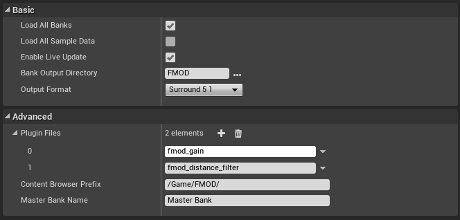
Each entry should be the filename of the plugin, without any extension. The plugin files should be located in the FMODStudio/Binaries/Platform/ directory.
For example, to use fmod_gain.dll on Win64 builds, you should have the file here:
FMODStudio/Binaries/Win64/fmod_gain.dll
2.11 Deployment
2.11.1 Package settings
This page describes steps required to prepare your project for deployment. This is relevant to both the Launch option as well as the 'File > Package Project' menu item.
2.11.2 Packaging banks
Banks need to be packaged and included in the game data. This can be done by selecting the 'Edit > Project Settings...' menu item. Navigating to the Packaging section from the left hand pane, under the Game heading, presents you with options for specifying directories that include extra assets. There are two ways of doing this:
- Additional Non-Asset Directories to Package: Will copy banks inside the final package file.
- Additional Non-Asset Directories to Copy: Will copy banks as loose files.
We recommend using Directories to Package so that bank files are bundled into the package file automatically.
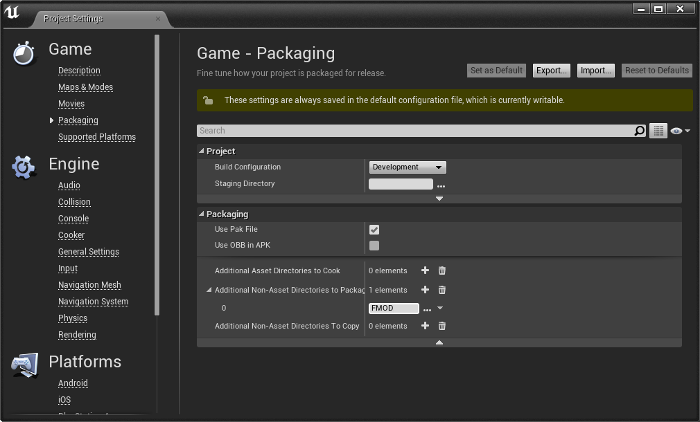
Each platform will look for its own type of banks in its own directory. Make sure you have added the platform to FMOD Studio project. The platforms are:
- Desktop (Windows, Mac, Linux)
- PS4
- XBox One
- Switch
- Mobile (iOS, Android)
If you only have the Desktop banks and want to run on another platform, you can set "Force Platform Name" to Desktop in the FMOD advanced settings.
2.11.3 Bank Files Inside Content Directory
The above directory name is relative to your Content directory. It is highly recommended that banks be placed within the Content directory, as paths outside the Content directory will not deploy correctly to all platforms. For example:
- Mac doesn't allow support directories outside the Content directory at all.
- Windows and Android have issues looking up directories outside the Content directory when used with packages.
This doesn't mean you need to put your whole Studio project inside the Content directory. You can customize Studio by editing the Preferences and choosing a directory to export banks to, as described in the Working with Banks page.
The integration will load the platform bank files automatically. On PC it will load from FMOD/Desktop but on Android and IOS it will look for banks under FMOD/Mobile.
If you use FMOD as the directory to deploy and have multiple platform banks exported, then they will all be packaged up. To slim down your final package size, you may need to tweak the Additional Directories setting on a per platform basis. That way you only package FMOD/Mobile for Android, FMOD/Desktop for PC, FMOD/PS4 for PS4, etc.
2.11.4 Deploying FMOD audio plugins
You will need to make sure the plugins are deployed as well. Unreal deployment doesn't access to the settings information so you will need to create an extra file that lists the plugins you want to deploy.
Create a file plugins.txt in the FMODStudio/Binaries/Platform/ directory. The text file should contain the plugin names (just the name without file extension).
For example, to deploy fmod_gain.dll on Win64 builds, create a file FMODStudio/Binaries/Win64/plugins.txt with the following contents:
fmod_gain
2.11.5 Linking the Integration
For most platforms, the integration should be linked and deployed properly regardless of whether you have a blueprint or code project. It should just work!
However, some platforms still have issues.
2.11.6 Deployment on Linux
To deploy on linux, you will need to rebuild the engine from source via github. For compiling linux from windows, see this page for instructions how to get up and running with UE4. Then, add in both the fmodstudio linux .zip and windows .zip on top of each other into the engine plugins directory.
The last thing you will need to do is to get the FMOD .so libraries into a directory that the executable can read them. The easiest way is to copy them from
<DeployedDir>\Engine\Plugins\FMODStudio\Binaries\Linux\x86_64
to
<DeployedDir>\<GameName>\Binaries\Linux
To see what directories the .so files can be located, look at LinuxToolChain.cs. Currently there are only a set of hard coded directories that are supported.
2.11.7 Deployment on Android
To deploy on Android, make sure FMODStudio is in your game's directory, not in the Engine plugins directory. When FMODStudio is in your game's plugin directory, the engine will rebuild the plugin for Android and deploy all the files properly.
Deployment of Android plugins
FMOD supports DSP plugins, which will be stand-alone .so files that will need to be packaged into the build. Add the .so file into the FMODStudio/Binaries/Android/{Architecture} directory. Unreal will also need an APL file so it knows to package the .so file. To do this, you will need to write an APL file and drop it into the FMODStudio/Binaries/Android directory. The FMODStudio.build.cs file looks for any file ending with __APL.xml_ and will pass that along to the unreal build tool for packaging.
The APL is a custom xml file format which is documented in the engine file AndroidPluginLanguage.cs. Here is a sample APL file for libovrfmod.so:
<?xml version="1.0" encoding="utf-8"?>
<!--Plugin additions-->
<root xmlns:android="http://schemas.android.com/apk/res/android">
<!-- init section is always evaluated once per architecture -->
<init>
<log text="ovrfmod APL init"/>
</init>
<!-- optional files or directories to copy to Intermediate/Android/APK -->
<resourceCopies>
<log text="ovrfmod APL copying files for $S(Architecture)/"/>
<copyFile src="$S(PluginDir)/$S(Architecture)/libovrfmod.so"
dst="$S(BuildDir)/libs/$S(Architecture)/libovrfmod.so" />
</resourceCopies>
<!-- optional libraries to load in GameActivity.java before libUE4.so -->
<soLoadLibrary>
<log text="ovrfmod APL adding loadLibrary references"/>
<loadLibrary name="ovrfmod" failmsg="ovrfmod not loaded and required!" />
</soLoadLibrary>
</root>
You only need to write this if you want to load a DSP plugin on Android.
2.11.8 Loading blueprints before plugin load
One issue to be aware of is where blueprints are serialized from disk too early, before any plugins are loaded. This can occur from the following code, which is included by default in example C++ projects constructor:
static ConstructorHelpers::FClassFinder<APawn> PlayerPawnClassFinder(TEXT("/Game/FirstPersonCPP/Blueprints/FirstPersonCharacter"));
The finder will serialize the first person character blueprint, but any FMOD references will fail to load since the FMOD plugin has not been created yet. To make sure that the FMOD plugin is loaded first, add the line of code above the class finder.
IFMODStudioModule::Get();
2.11.9 Disabling Unreal Audio Device
By default FMOD Studio works side-by-side with the inbuilt Unreal audio device. To disable the Unreal audio while leaving the FMOD Studio audio, the standard Unreal ini file setting can be used.
For windows, add a new file /Config/Windows/WindowsEngine.ini with this section:
[Audio]
AudioDeviceModuleName=
The audio device can be disabled for every platform that you want to ship with.
2.11.10 Enabling Live Update
The default permissions won't allow FMOD to set up a socket properly for live update. Uncheck the "Enable Live Update" option in FMOD settings to avoid errors.
If you get a deployment error "resource.resw is in use by other process", go to the YourGame/Config/DefaultGame.ini and remove the following:
-CulturesToStage=en
+CulturesToStage=en
2.11.11 Deployment on XBox One
Enabling XboxOne Microphone Input
To enable FMOD Studio the use of any microphone input, including Kinect, on the Xbox One. The Engine ini file specific for the platform, located in /Config/XboxOne/XboxOneEngine.ini, needs to have the following lines added:
[AppxManifest]
Package.Capabilities.mx:Capability[0].Name=kinectAudio
Package.Capabilities.mx:Capability[1].Name=kinectGamechat
Copying dll's to build
Add the following to GetFilesToDeployOrStage in XboxOnePlatform.Automation.cs, before the end of the function:
// FMOD code start
DirectoryReference FMODDLLPath = null;
if (Directory.Exists(Path.Combine(SC.ProjectRoot.ToString(), "Plugins/FMODStudio")))
{
FMODDLLPath = DirectoryReference.Combine(SC.ProjectRoot, "Plugins/FMODStudio/Binaries/XBoxOne/");
}
else if (Directory.Exists(Path.Combine(SC.LocalRoot.ToString(), "Engine/Plugins/FMODStudio")))
{
FMODDLLPath = DirectoryReference.Combine(SC.LocalRoot, "Engine/Plugins/FMODStudio/Binaries/XBoxOne/");
}
else
{
LogError("Failed to find FMODStudio plugin in game or engine directory");
}
if (FMODDLLPath != null)
{
Log("Copying FMOD dlls to loose directory: " + RelativeBinPath);
StagedDirectoryReference RelativeBinPathRef = new StagedDirectoryReference(RelativeBinPath);
StageFileIfExists(StagedFileType.NonUFS, FileReference.Combine(FMODDLLPath, "fmod.dll"), RelativeBinPathRef, SC);
StageFileIfExists(StagedFileType.NonUFS, FileReference.Combine(FMODDLLPath, "fmodL.dll"), RelativeBinPathRef, SC);
StageFileIfExists(StagedFileType.NonUFS, FileReference.Combine(FMODDLLPath, "fmodstudio.dll"), RelativeBinPathRef, SC);
StageFileIfExists(StagedFileType.NonUFS, FileReference.Combine(FMODDLLPath, "fmodstudioL.dll"), RelativeBinPathRef, SC);
}
// FMOD code end
Add the following to PrepTargetForDeployment in XboxOneDeploy.cs, in the same scope as 'DestDir':
// FMOD code start
string FMODDLLPath = null;
if (Directory.Exists(Path.Combine(InTarget.ProjectDirectory.FullName, "Plugins/FMODStudio")))
{
FMODDLLPath = Path.Combine(InTarget.ProjectDirectory.FullName, "Plugins/FMODStudio/Binaries/XBoxOne/");
}
else if (Directory.Exists(Path.Combine(RelativeEnginePath, "Plugins/FMODStudio")))
{
FMODDLLPath = Path.Combine(RelativeEnginePath, "Plugins/FMODStudio/Binaries/XBoxOne/");
}
else
{
Log.TraceWarning("Failed to find FMODStudio plugin in game or engine directory");
}
if (FMODDLLPath != null)
{
Log.TraceInformation("...copying the FMOD dlls...");
string FMODDLLName = "fmod.dll";
Log.TraceInformation("\tcopying " + FMODDLLPath + FMODDLLName + " to " + DestDir + "/" + FMODDLLName);
CopyFile(FMODDLLPath + FMODDLLName, DestDir + "/" + FMODDLLName, true);
FMODDLLName = "fmodL.dll";
Log.TraceInformation("\tcopying " + FMODDLLPath + FMODDLLName + " to " + DestDir + "/" + FMODDLLName);
CopyFile(FMODDLLPath + FMODDLLName, DestDir + "/" + FMODDLLName, true);
FMODDLLName = "fmodstudio.dll";
Log.TraceInformation("\tcopying " + FMODDLLPath + FMODDLLName + " to " + DestDir + "/" + FMODDLLName);
CopyFile(FMODDLLPath + FMODDLLName, DestDir + "/" + FMODDLLName, true);
FMODDLLName = "fmodstudioL.dll";
Log.TraceInformation("\tcopying " + FMODDLLPath + FMODDLLName + " to " + DestDir + "/" + FMODDLLName);
CopyFile(FMODDLLPath + FMODDLLName, DestDir + "/" + FMODDLLName, true);
}
// FMOD code end